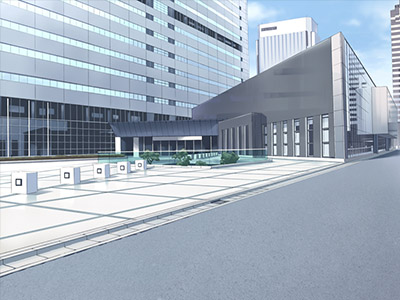
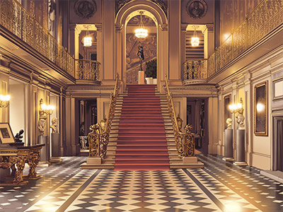
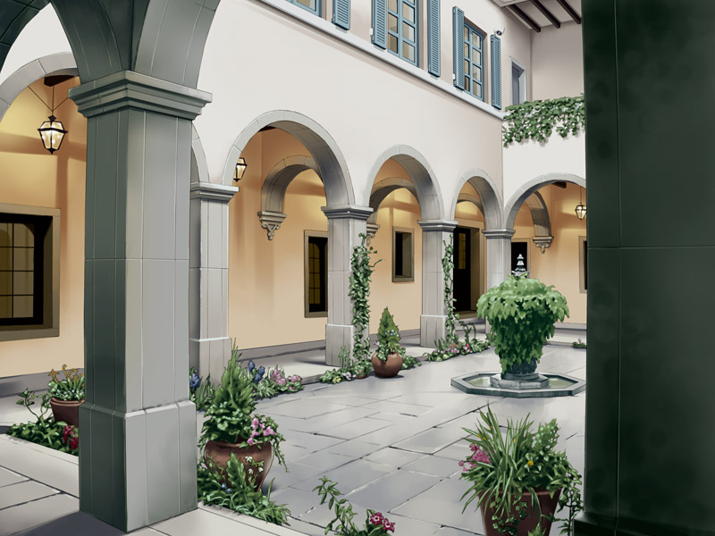
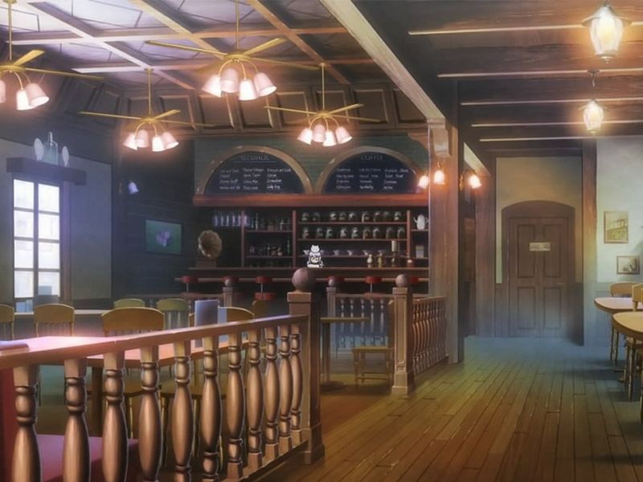

Experiences
Archetecture Constructs
Ogawa Apartment 2001-2004
The prototype of the blueprint was being developed during her college years. It was fully implemented in 2001 and construction finished three years later.
Mifune Hotel 2009-2010
Constructed in a mere one-year process. The owner placed a statue inside the lobby for crediting the original designer (Touko).
Fuyuki Theater 2010-2013
One of her biggest project, the theater is located near the outskirts of the town. Its a bit of a ride down to the sub-urbs, but its quite worth it.
Exhibitions
Museum of Anatomy Present, come see!
Currently displaying her latest doll creations. The dolls represent anatomy correctly, but with slight alterations. It may seem quirky, but its quite interesting for those studying anatomy in drawing class.
Cafe Crossover Present, come see!
It may seem like a cafe, but inside there are various paintings and odd antiques scatter throughout. For those who are into art and food. Its the perfect place for a casual relaxation time.